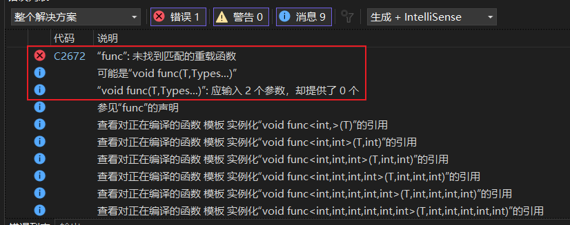

模板类函数继承调用问题
- this 指针显示调用
实例化后调用
模板没有实例化直接是没有意义的
严重性 代码 说明 项目 文件 行 禁止显示状态
错误 C3861 “TestCA”: 找不到标识符 CPPTest1 D:\xxx\VSProjects\CPPTest1\CPPTest1.cpp 20
----------
#include <iostream>
#include <string>
using namespace std;
// 主模板
template <typename T>
class CA {
public:
void TestCA() {
cout << "test" << endl;
};
};
template <typename T>
class CB : public CA<T>{
public:
int nNumA;
public:
void TestCB() {
//TestCA(); // 调用失败
this->TestCA(); // this 显示调用
CB<int>::TestCA(); // 实例化显示调用
};
};
int main() {
CB<int> objCB;
objCB.TestCB();
system("pause");
return 0;
}
模板的一些补充
typename
用来显示的指示后面的是类型
e.g：声明一个 T::SubType * 的指针 ptr
typename T::SubType * ptr
如果没有 typename 关键字就变成了 T 作用域下 SubType 变量 * ptr 变量
零初始化
函数
#include <iostream> #include <string> using namespace std; template <typename T> void tfunc() { T x = T(); // 模板函数零初始化 cout << x << endl; }; int main() { tfunc<int>(); system("pause"); return 0; }类
#include <iostream> #include <string> using namespace std; template <typename T> class CA { public: T x; CA():x() { // 模板成员参数初始化列表零初始化 cout << x << endl; }; }; int main() { CA<double> obj; system("pause"); return 0; }
引用类型不会转换指针
#include <iostream>
#include <string>
using namespace std;
template <typename T>
T const & Max(T const tValue1, T const tValue2) {
return tValue1 > tValue2 ? tValue1 : tValue2;
}
int main() {
// 引用类型不会转化指针
// 非引用类型会从 char[] 转换成 char * 【类型退化】
// char[5]
Max("test", "fail");
// char[5] char[8]
Max("test", "zhaocai"); // T const & Max(T const tValue1, T const tValue2) 函数参数类型改成这个就可以通过
// char[5] string
string szBuffer;
Max("test", szBuffer); // 这个类型不符始终无法通过
system("pause");
return 0;
}
模板分开在头文件和实现直接包含头文件不能使用，需要实例化
- 声明和实现都要放到头文件【即放到同一地方】
- 新的 C++ 标准可以使用
export 导出模板关键字
模板类的继承
C++14 后 -- 变量模板
#include <iostream>
using namespace std;
template <typename T>
T tValue; // tValue 变量也可以任何类型了
int main() {
tValue<int> = 100;
cout << tValue<int> << endl;
system("pause");
return 0;
}
----------
template <typename T, int count>
T tValue[count]; // tValue 变量也可以作为数组
for (int i=0; i<10; i++) {
tValue<int, 10>[i] = i; // 一个 int 型的大小为 10 的数组
}
静态模板成员
template <typename T>
class CA {
public:
template <typename W>
static W st_Value;
};
template <typename T>
template <typename W>
W CA<T>::st_Value = 0;
可变参模板
#include <iostream>
#include <string>
using namespace std;
void func() {} // 递归终止条件
template <typename T, typename ... Types>
void func(T head, Types ... res) {
cout << head << endl; // res... == 2, 3, 4, 5, 6
func(res...);
}
int main() {
func<int>(1, 2, 3, 4, 5, 6);
system("pause");
return 0;
}
如果没有终止函数的话，因为可变参数 res... 是不断递减的

- 模版不支持在局部函数中声明定义或使用
- 自动类型推导，必须推导出一致的数据类型 T，才可以使用模板必须要确定出 T 的数据类型，才可以使用。
模板类本身未指定所使用的数据类型，不能单独编译模板类的实现。 只用在使用模板类的阶段，指定了模板中的数据类型，编译器才能正常编译。因此，在实际开发中，必须把实现全部写在头文件里面，把声明和实现分开的做法不可取。
在 C++ 中，在编译阶段才确定对象所占用的空间。模板类只有被真正使用的时候，编译器才知道，模板套用的是什么类型，应该分配多少空间。然后根据套用的类型进行编译。套用不同类型的模板类实际上就是两个不同的类型，因此这两个类型的共同成员函数实质上也不是同一个函数，仅仅是具有相似的功能。因此，模板类在套用不同类型以后，会被编译出不同的代码。